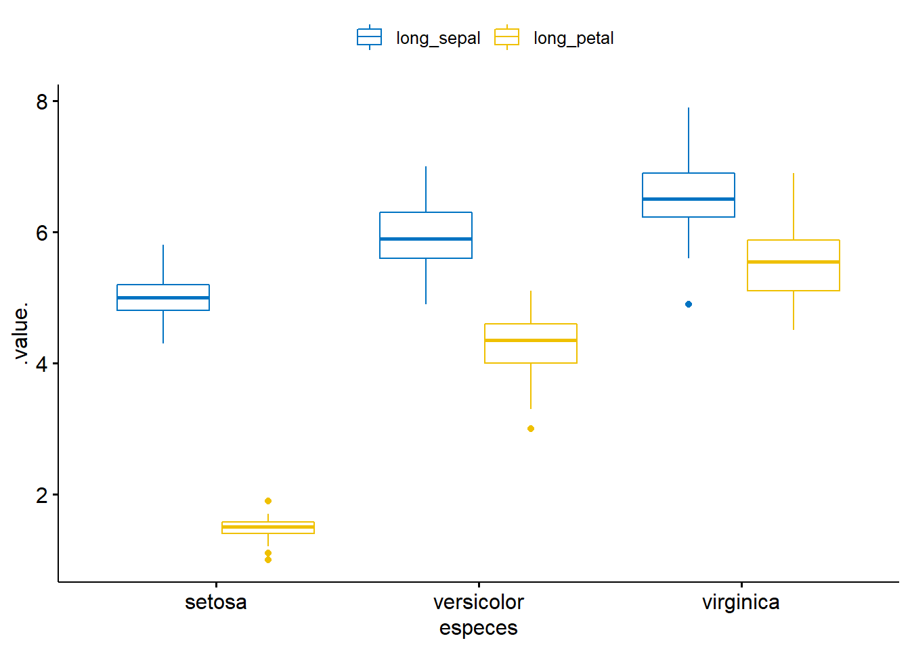
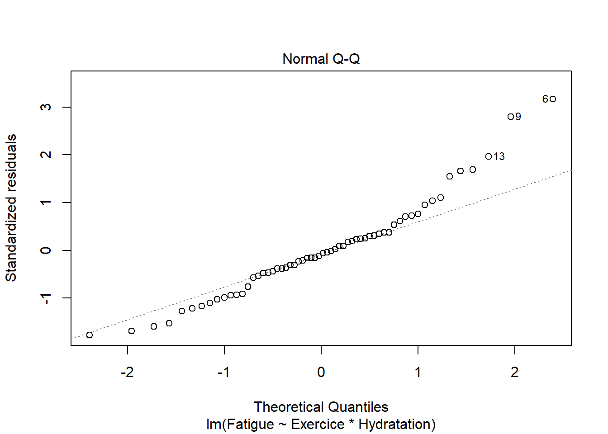
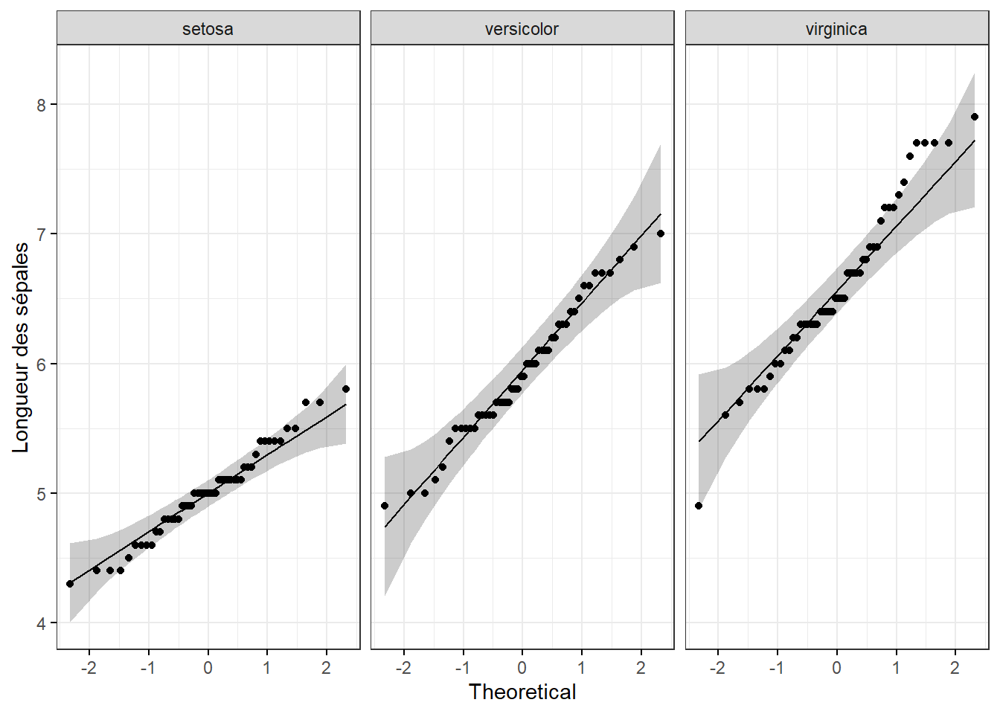

Chapitre 4 ANOVA à 2 facteurs : quand les hypothèses ne sont pas satisfaites
Nous allons voir ici, les solutions qui peuvent être envisagées lorsque l’hypothèse de normalité et/ou l’hypothèse d’homogénéité des résidus ne sont pas satisfaites pour une ANOVA à 2 facteurs (two ways anova).
4.1 Rappels concernant les hypothèses de validité de l’ANOVA à 2 facteurs
Comme décrit dans le tutoriel il est nécessaire que l’ANOVA à 2 facteurs (comme tous les modèles linéaires d’ailleurs) satisfasse trois conditions, pour que ses résultats soient valides (c’est à dire pour qu’on puisse avoir confiance dans ces résultats). On parle alors d’hypothèses de validité.
Celles-ci se vérifient sur les résidus de l’ANOVA.
Ces hypothèses de validité sont :
- L‘indépendance des résidus,
- La normalité des résidus, autrement dit les résidus sont distribués selon une loi normale de moyenne 0,
- L’homogénéité des résidus, autrement dit la dispersion des résidus (pour chaque condition correspondant aux croisements des modalités des deux facteurs) est similaire.
Si l’hypothèse d’indépendance des résidus n’est pas satisfaite, c’est généralement parce que des observations sont réalisées plusieurs fois sur la même unité expérimentale.
Par exemple, si un des facteurs est un traitement (A ou B) et le second facteur du temps (Jour1, jour2, jour 3) et que les observations sont réalisées pour chaque temps sur le même sujet. Dans ce cas, les données d’un même sujet sont corrélées, et il s’agit alors d’utiliser un modèle mixte pour prendre en compte que les données d’un même sujet se ressemblent plus que les données de deux sujets différents.
Cette situation de non-indépendance des données nécessite de changer d’approche statistique.
En revanche, lorsque les résidus ne satisfont pas l’hypothèse de normalité et/ou l’hypothèse d’homogénéité cela est plus problématique, car il n’existe pas, du moins à ma connaissance, d’approche non paramétrique de l’ANOVA à 2 facteurs (comme cela est le cas pour l’ANOVA à un facteur avec le test de Kruskal-Wallis).
Il existe néanmoins une solution qui peut facilement être mise en place. Il s’agit d’appliquer une transformation sur la variable réponse. C’est ce que nous allons explorer dans cet article.
Une solution simple pour l’ANOVA à 2 facteurs : la transformation.
Lorsque, dans une ANOVA à 2 facteurs, l’hypothèse de normalité des résidus, et/ou l’hypothèse d’homogénéité des résidus ne sont pas satisfaites, une solution simple à envisager est celle de l’utilisation d’une transformation log, ou d’une transformation de type BoxCox (c’est une généralisation de la transformation log) de la variable réponse. L’application de ces transformations a pour conséquence d’améliorer conjointement la normalité et l’homogénéité des résidus. C’est pour cela qu’on peut avoir recours à la transformation de la variable réponse en cas de défaut de normalité des résidus et/ou en cas de défaut d’homogénéité.
4.2 Libraires
Prenons pour exemple le dataframe df, données simulées pour l’occasion. On pourrait imaginer qu’il s’agit de mesurer la fatigue musculaire des quadriceps en fonction de trois types d’exercices (course à pied / vélo / vélo elliptique) et en fonction de deux types d’hydratation (eau, boisson glucidique).
##
## -- Column specification --------------------------------------------------------
## cols(
## Fatigue = col_double(),
## Exercice = col_character(),
## Hydratation = col_character()
## )4.3 Visualisation des données
Commençons par visualiser les données :
ggplot(df, aes(y = Fatigue, x = Exercice, colour = Hydratation)) +
geom_point(position = position_jitterdodge(dodge.width = 0.7), size = 2) +
geom_boxplot(alpha = 0.5, position = position_dodge(width = 0.8), fatten = NULL) #+## Warning: Removed 1 rows containing missing values (geom_segment).
## Warning: Removed 1 rows containing missing values (geom_segment).
## Warning: Removed 1 rows containing missing values (geom_segment).
## Warning: Removed 1 rows containing missing values (geom_segment).
## Warning: Removed 1 rows containing missing values (geom_segment).
## Warning: Removed 1 rows containing missing values (geom_segment).
On peut voir que :
les niveaux de fatigue lors des exercices de courses et de vélo elliptique sont relativement proches, mais qu’en revanche la fatigue musculaire est plus forte pour l’exercice du vélo simple.
le niveau de fatigue est globalement moins élevé en cas d’hydratation avec une boisson glucidique, et que le profil des fatigues est plutôt parallèle.
les profils de fatigue en fonction du type d’hydratation semblent un peu différents (forte augmentation de la fatigue pour le couple Vélo simple et hydratation avec de l’eau). Ceci laisse à penser qu’une interaction entre les facteurs “Hydration” et “Exercice” pourrait être présente.
4.4 Mise en évidence des défauts de normalité et d’homogénéité
4.4.1 Réalisation de l’ANOVA à 2 facteurs
Pour rappel, les contrastes sont modifiés pour obtenir des carrés de type 3.
4.4.2 Evaluation de l’hypothèse de normalité des résidus

Le QQplot nous montre qu’il existe un défaut de normalité assez prononcé puisque de nombreux points ne sont pas bien alignés selon la droite.
Le test de Shapiro-Wilk va dans le même sens puisque sa p-value est < 0.05 ; il rejette donc l’hypothèse de normalité.
##
## Shapiro-Wilk normality test
##
## data: residuals(mod)
## W = 0.95253, p-value = 0.020514.4.3 Evaluation de l’hypothèse d’homogénéité des résidus

Le plot des résidus standardisés en fonction des valeurs prédites (les moyennes des croisements des exercices et des types d’hydratation) nous montre qu’il existe un défaut d’homogénéité des résidus. En effet, on peut voir que la variabilité des résidus a tendance à augmenter lorsque la fatigue augmente (fitted values).
On peut également réaliser un test de Bartlett, en créant une variable condition qui est le croisement des modalités des facteurs Exercice et Hydratation :
## # A tibble: 6 x 4
## Fatigue Exercice Hydratation condition
## <dbl> <chr> <chr> <fct>
## 1 32.2 Course boisson glucidique Course_boisson glucidique
## 2 34.4 Course boisson glucidique Course_boisson glucidique
## 3 34.1 Course boisson glucidique Course_boisson glucidique
## 4 38.2 Course boisson glucidique Course_boisson glucidique
## 5 31.6 Course boisson glucidique Course_boisson glucidique
## 6 36.0 Course boisson glucidique Course_boisson glucidiqueLe test de Bartlett va dans le même sens puisque sa p-value est < 0.05 ; il rejette donc l’hypothèse d’égalité des variances des résidus.
##
## Bartlett test of homogeneity of variances
##
## data: residuals(mod) by df$condition
## Bartlett's K-squared = 26.022, df = 5, p-value = 8.837e-054.5 Utilisation d’une transformation log de la réponse
4.5.1 Réalisation de l’ANOVA à 2 facteurs avec le log de la réponse
Pour cela, il suffit seulement d’ajuster à nouveau le modèle ANOVA à 2 facteurs, en utilisant log(Fatique) comme variable réponse :
mod_log <- lm(log(Fatigue) ~ Exercice*Hydratation,
contrasts = list(Exercice = contr.sum, Hydratation = contr.sum),
data = df) Remarque :
La transformation
logpeut être utilisée si les valeurs de la variable réponse sont strictement positives. Si certaines valeurs sont nulles, on peut ajouter + 1 au log :log(Fatique+1).
4.5.2 Evaluation de l’hypothèse de normalité
Quand on réalise à nouveau le QQplot, on peut voir que la normalité des résidus s’est améliorée :

De même, le test de Shapiro-Wilk ne rejette plus l’hypothèse de normalité des résidus puisque sa pvalue est > 0.05.
##
## Shapiro-Wilk normality test
##
## data: residuals(mod_log)
## W = 0.98347, p-value = 0.59114.5.3 Evaluation de l’hypothèse d’homogénéité
Le plot des résidus standardisés en fonction des valeurs prédites ne met plus en évidence d’augmentation systématique de la variabilité des résidus avec l’augmentation de la fatigue, et globalement les variabilités des résidus semblent similaires.
Et le test de Bartlett ne rejette plus l’hypothèse homogénéité des variances ; sa p-value est > 0.05.
##
## Bartlett test of homogeneity of variances
##
## data: residuals(mod_log) by df$condition
## Bartlett's K-squared = 6.7056, df = 5, p-value = 0.2435Remarque : le test de Levene peut également être utilisé pour évaluer la robustesse du résultat :
## Levene's Test for Homogeneity of Variance (center = median)
## Df F value Pr(>F)
## group 5 1.0705 0.387
## 544.5.4 Résultats
La table ANOVA est accessible via la fonction Anova() du package car. L’interaction Hydratation * Exercice apparaît significative.
Pour plus d’informations sur l’interprétation et les suites à donner à l’analyse, consulter le tutoriel sur l’ANOVA à 2 facteurs.
4.6 Utilisation d’une transformation BoxCox de la réponse
4.6.1 Définition et réalisation
La transformation BoxCox est définie par :
\[ B(x, \lambda)=\left\{\begin{array}{ll} \frac{x^{\lambda}-1}{\lambda} & \text { si } \lambda \neq 0 \\ \log (x) & \text { si } \lambda=0 \end{array}\right. \]
Quand lambda est différent de zéro, la transformation BoxCox est très proche d’une transformation puissance puisqu’elle retranche 1 et divise par lambda, qui est une constante.
Deux éléments importants sont à prendre en considération :
Cette transformation BoxCox s’applique elle aussi uniquement lorsque les données sont strictement positives, car en présence de valeurs négatives et positives, l’ordre des données, peut, ne pas être préservé. Dans ce cas, on peut ajouter une valeur (appelé start) aux réponses pour les rendre toutes positives.
La transformation est efficace seulement si les données sont relativement distendues (ratio min max > 1).
Il existe plusieurs fonctions dans R pour appliquer une transformation BoxCox. Ma préférence va à la fonction powerTransform() du package car, pour sa simplicité d’utilisation et les informations fournies en sortie. La fonction powerTransform() s’applique directement sur le modèle (celui avec les données initiales) :
## bcPower Transformation to Normality
## Est Power Rounded Pwr Wald Lwr Bnd Wald Upr Bnd
## Y1 -0.2575 0 -0.7824 0.2675
##
## Likelihood ratio test that transformation parameter is equal to 0
## (log transformation)
## LRT df pval
## LR test, lambda = (0) 0.9521272 1 0.32918
##
## Likelihood ratio test that no transformation is needed
## LRT df pval
## LR test, lambda = (1) 24.81044 1 6.3254e-07Les sorties de la fonction sont constituées de trois éléments.
Dans la première partie, on retrouve l’estimation du coefficient lambda (l’estimation est faite par maximum de vraisemblance).
Dans la seconde partie, un test statistique est réalisé pour évaluer si lambda peut être fixé à 0, c’est à dire pour évaluer si une simple transformation log est suffisante.
Dans la troisième partie un test statistique est réalisé pour évaluer si la transformation BoxCox (avec lambda = 1 ou lambda différent de 1) est réellement nécessaire.
Ici, on peut voir que :
- lambda est estimé à -0.2575 avec un intervalle de confiance à 95% = [-0.7824 ; 0.2675].
- la transformation log serait suffisante. On s’en doutait déjà puisque l’intervalle de confiance de lambda contient 0.
- il est nécessaire d’appliquer une transformation (log ou autre).
A présent, il est nécessaire d’ajouter la réponse transformée au jeu de données, pour ensuite ajuster à nouveau le modèle ANOVA à 2 facteurs avec cette nouvelle réponse :
## Fatigue Exercice Hydratation condition Fatigue_bc
## 1 118.32 Vélo simple eau Vélo simple_eau 2.747563
## 2 110.02 Vélo simple eau Vélo simple_eau 2.726083
## 3 125.32 Vélo simple eau Vélo simple_eau 2.764256
## 4 110.42 Vélo simple eau Vélo simple_eau 2.727164
## 5 111.94 Vélo simple eau Vélo simple_eau 2.731229
## 6 138.65 Vélo simple eau Vélo simple_eau 2.7930214.6.2 Evaluation de l’hypothèse de normalité des résidus
Lorsqu’on réalise le QQplot, on peut alors voir que la normalité des résidus a été améliorée :

Ceci est confirmé par le test de Shapiro-Wilk :
##
## Shapiro-Wilk normality test
##
## data: residuals(mod_bc)
## W = 0.98638, p-value = 0.74164.6.3 Evaluation de l’hypothèse d’homogénéité des résidus
La variabilité des résidus semble plutôt homogène.
Ceci est confirmé par le test de Bartlett :
##
## Bartlett test of homogeneity of variances
##
## data: residuals(mod_bc) by df_bc$condition
## Bartlett's K-squared = 6.1115, df = 5, p-value = 0.29554.6.4 Exploitation des résultats
## Anova Table (Type III tests)
##
## Response: Fatigue_bc
## Sum Sq Df F value Pr(>F)
## (Intercept) 383.89 1 448427.887 < 2.2e-16 ***
## Exercice 0.65 2 380.712 < 2.2e-16 ***
## Hydratation 0.37 1 433.678 < 2.2e-16 ***
## Exercice:Hydratation 0.01 2 5.336 0.007679 **
## Residuals 0.05 54
## ---
## Signif. codes: 0 '***' 0.001 '**' 0.01 '*' 0.05 '.' 0.1 ' ' 1Ici encore l’interaction Hydratation * Exercice apparaît significative. Cela était déjà le cas avant l’application des transformations, mais avec une statistique F sans doute largement surestimée (de l’ordre de 6 et 5 avec les transformations contre 34 sans ! - voir ci-dessous) :
## Anova Table (Type III tests)
##
## Response: Fatigue
## Sum Sq Df F value Pr(>F)
## (Intercept) 261217 1 6529.414 < 2.2e-16 ***
## Exercice 26869 2 335.814 < 2.2e-16 ***
## Hydratation 13589 1 339.671 < 2.2e-16 ***
## Exercice:Hydratation 2746 2 34.317 2.411e-10 ***
## Residuals 2160 54
## ---
## Signif. codes: 0 '***' 0.001 '**' 0.01 '*' 0.05 '.' 0.1 ' ' 14.7 Conclusion
Il est à noter que ces transformations log et BoxCox ne sont pas réservées à l’ANOVA à deux facteurs, elles peuvent également être utilisées , par exemple, dans le cadre de la régression linéaire multiple, qui n’a pas non plus d’équivalent non paramétrique. Il faut aussi garder en tête que ces transformations ne sont pas toujours efficaces, parfois les améliorations de la normalité et / ou de l’homogénéité des résidus restent insuffisante.
D’autres approches peuvent être employées si seule l’hypothèse d’homogénéité des résidus est rejetée, comme l’utilisation des estimateurs sandwich ou encore en modélisant la variance.